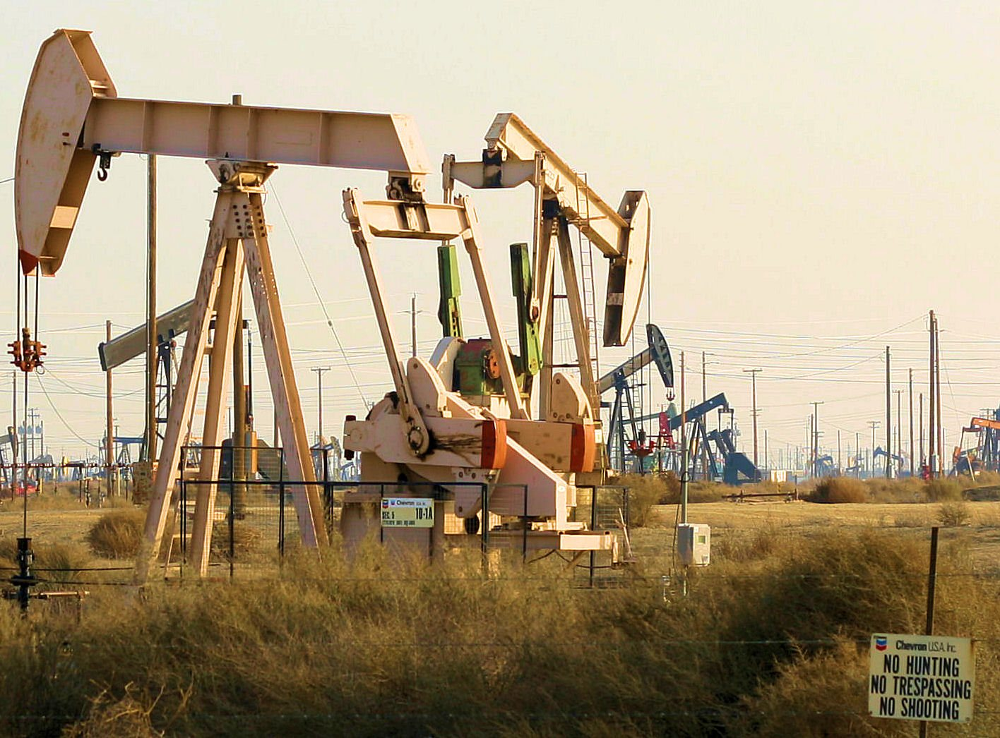

Il War Premium (Premio di Guerra): cos'era salito e perché scende
Nelle settimane precedenti, il Brent aveva superato i 92 dollari al barile, trainato dalla crescente preoccupazione per le sanzioni americane all'Iran e per la possibilità di nuove restrizioni all'export di petrolio iraniano verso la Cina e l'Asia. L'Iran è uno dei maggiori produttori mondiali di greggio: nonostante le sanzioni in vigore, esporta una quota significativa verso i mercati asiatici.
Le dichiarazioni di Trump — che ha lasciato intendere apertura verso un dialogo con Teheran — hanno ridimensionato le preoccupazioni degli operatori. Se l'Iran tornasse a esportare liberamente, l'offerta globale di greggio aumenterebbe, spingendo le quotazioni verso il basso. Il mercato ha immediatamente scontato questa eventualità.
| Commodity | Quotazione 10 nov | Variazione giornaliera |
|---|---|---|
| Brent (greggio europeo) | 90,8 $/barile | −1,8% |
| WTI (greggio americano) | ~85 $/barile | ~−2% |
| Oro | ~3.608 €/oz | −2,24% |
| Bitcoin | ~73.800–74.300 $ | — |
💡 Impara: War Premium (Premio di Guerra)
Il War Premium (premio di guerra) è la quota del prezzo del petrolio che gli operatori aggiungono per compensare il rischio di eventi geopolitici: guerre, sanzioni, blocchi navali, attacchi alle infrastrutture. Non riflette la domanda reale o i fondamentali dell'offerta, ma la paura che il flusso di greggio possa interrompersi. Quando la tensione si allenta, questo premio evapora rapidamente e il Brent può perdere diversi dollari in poche ore, anche senza che sia cambiato nulla nella produzione effettiva.
L'Iran e il petrolio: quanti barili in gioco
L'Iran è il terzo produttore dell'OPEC (Organization of the Petroleum Exporting Countries — Organizzazione dei Paesi Esportatori di Petrolio) per capacità estrattiva. Prima delle sanzioni del 2018-2019, esportava circa 2,5 milioni di barili al giorno; con le sanzioni, le esportazioni ufficiali sono scese a circa 300.000 barili al giorno, anche se stime di settore indicano volumi effettivi più alti grazie alle vendite "nascoste" verso Cina e India.
Un potenziale accordo che rimuovesse le sanzioni porterebbe sul mercato un milione o più di barili aggiuntivi al giorno — abbastanza da fare la differenza in un mercato che già gode di una relativa abbondanza grazie alla produzione americana da Shale Oil (petrolio da scisto).
💡 Impara: Shale Oil (Petrolio da Scisto)
Lo Shale Oil (petrolio da scisto) è il greggio estratto dalle rocce argillose tramite la tecnica del fracking (fratturazione idraulica). Gli USA sono diventati il primo produttore mondiale di petrolio grazie allo shale, con oltre 13 milioni di barili al giorno. Questo ha cambiato la geopolitica dell'energia: l'America non dipende più dall'OPEC, e la minaccia di aumentare la produzione di shale americano funge da "tetto" naturale al prezzo del Brent. Quando il Brent sale oltre gli 80-90 dollari, diventa conveniente aprire nuovi pozzi in Texas e Dakota del Nord, aumentando l'offerta e riportando i prezzi verso il basso.
L'oro cede: il paradosso dell'inflazione alta
Nella stessa seduta, anche l'oro ha registrato un ribasso significativo: −2,24%, scendendo a circa 3.608 euro l'oncia. Il calo può sembrare controintuitivo: l'inflazione alta dovrebbe sostenere l'oro, tradizionale bene rifugio contro la svalutazione monetaria. Tuttavia, la risposta dei mercati al CPI di ottobre è stata di aumentare le aspettative sui tassi della Fed, facendo salire i rendimenti reali dei Treasury — il principale concorrente dell'oro come bene rifugio privo di rischio di credito.
Quando i tassi reali salgono, il costo-opportunità di detenere oro aumenta: perché tenere un metallo che non paga interessi quando i Treasury offrono rendimenti positivi? Il metallo giallo ha quindi ceduto terreno nonostante il contesto inflazionistico.
Bitcoin stabile intorno ai 74.000 dollari
Il Bitcoin ha oscillato nella zona di 73.800–74.300 dollari nel corso della seduta, in calo rispetto ai picchi di inizio mese quando aveva sfiorato gli 80.000 dollari. La criptovaluta sconta il doppio effetto negativo: i tassi alti riducono la propensione al rischio, mentre le eventuali vendite di asset da parte degli investitori colpiti dalla correzione di Wall Street aumentano l'offerta di BTC sui mercati.
| Scenario | Effetto previsto su Brent |
|---|---|
| Accordo USA-Iran | −5/−10 $ al barile (più offerta) |
| Nuove sanzioni Iran | +5/+15 $ al barile (meno offerta) |
| Taglio OPEC+ | +5/+10 $ al barile |
| Recessione USA | −15/−25 $ al barile (meno domanda) |
| Scenario base 2026 | 85–95 $ al barile (consensus) |
Implicazioni per l'inflazione italiana ed europea
Un Brent che scende dai 92 agli 90 dollari può sembrare un movimento minimo, ma ha effetti diretti sui prezzi al pompa in Italia e in tutta Europa. L'Italia importa circa l'80% del suo fabbisogno energetico: petrolio, gas naturale e derivati influenzano direttamente le bollette domestiche, il costo dei trasporti e, a cascata, i prezzi di quasi tutti i beni di consumo.
Se il prezzo del Brent tornasse sotto gli 85 dollari grazie a una distensione diplomatica con l'Iran, la BCE potrebbe trovare più facile il percorso verso un abbassamento dei tassi nel 2027, con beneficio per i mutui variabili e il credito alle imprese italiane.